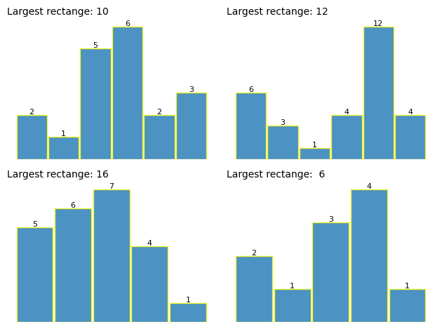
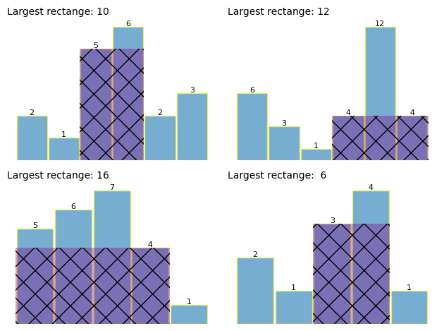

tests = (
([2, 1, 5, 6, 2, 3], 10),
([6, 3, 1, 4, 12, 4], 12),
([5, 6, 7, 4, 1], 16),
([2, 1, 3, 4, 1], 6),
)Largest Rectangle under a histogram
This is a popular coding interview question. It’s really simple with a simple histogram using pen and paper, but harder to think about in code, as it takes a bit of thinking through.
Detailed problem description: https://leetcode.com/problems/largest-rectangle-in-histogram/
A few test arrays with the largest area:
The arrays are visualized below, which makes it much easier to think about the solution. I found it easier to do it on paper first, before coding.
Code
fig, axes = plt.subplots(2, 2, layout="tight")
for ax, (arr, ans) in zip(axes.flatten(), tests):
ax.set_axis_off()
bar = ax.bar(
range(len(arr)),
arr,
width=0.95,
alpha=0.8,
edgecolor="yellow",
)
ax.set_title(f"Largest rectange: {ans:2}", loc="left", fontsize=10)
ax.bar_label(bar, fontsize=8)
Looking at the array makes it easy to see where the largest rectangle might be.
A simple solution
We can brute force this by generating the largest possible rectangle at every item in the array.
For each N in the arry:
- find the left and right boundary of the largest possible rectangle
- this gives us the width, exluding the width of N itself (adding 1 to ad back N)
- so now we have the width, and the height is just the value N in the array
To keep things simple, first up a helper function which returns the rectangle boundaries of a given point in an array:
def find_boundary(idx: int, arr: list[int]) -> tuple[int, int]:
"""
Example:
idx 2 for [2, 1, 5, 6, 2, 3] returns (2, 3)
Returns:
(left, right)
"""
# find left boundary (can be itself)
left = 0
if idx == left:
pass # deals with the left edge
else:
# march leftwards all the way to zero:
for j in range(idx - 1, -1, -1):
if arr[j] < arr[idx]:
left = j + 1 # adding 1 to exlude boundary
break # exit loop once the first boundary found
# find right boundary (can be itself)
right = len(arr) - 1 # deal with the right edge
if idx == right:
pass # at right edge already
else:
# march rightwards
for j in range(idx, len(arr)):
if arr[j] < arr[idx]:
right = j - 1 # subtracting 1 to exclude boundary
break
return left, rightPhew! that should return the (left, right) boundaries for a given index and array.
I drew the boundaries by hand for the first array to test the algo:
# testing this for the first arrary in the tests
for arr, ans in tests:
print("array: ", arr)
for i in range(len(arr)):
print(f"Index {i}: (val {arr[i]}) - Boundaries: {find_boundary(i, arr)}")
breakarray: [2, 1, 5, 6, 2, 3]
Index 0: (val 2) - Boundaries: (0, 0)
Index 1: (val 1) - Boundaries: (0, 5)
Index 2: (val 5) - Boundaries: (2, 3)
Index 3: (val 6) - Boundaries: (3, 3)
Index 4: (val 2) - Boundaries: (2, 5)
Index 5: (val 3) - Boundaries: (5, 5)The find_boundary func is working, so now its easy to get the area of the max rectangle.
Finding the largest rectangle
The below function iterates through every item in the array, calculates the area of the largest rectangle at that point, and updates the max area function.
def max_area(arr: list[int], viz: bool = False) -> int:
"""returns the area of the biggest rectangle,
and optionally returns its index"""
max_area = 0
max_idx = None
for i in range(len(arr)):
left, right = find_boundary(i, arr)
# adding 1 to width as when we calc (right - left) it excludes itself
width = 1 + right - left
new_area = arr[i] * width
if new_area > max_area:
max_area = new_area
max_idx = i
if viz:
return max_idx, max_area
else:
return max_area
for arr, ans in tests:
assert max_area(arr) == ans
print(f"{arr} ----> {max_area(arr)}")
print(f"all {len(tests)} tests passed!")[2, 1, 5, 6, 2, 3] ----> 10
[6, 3, 1, 4, 12, 4] ----> 12
[5, 6, 7, 4, 1] ----> 16
[2, 1, 3, 4, 1] ----> 6
all 4 tests passed!That was pretty straight forward, though a bit verbose. Now an excercise in plotting this visually:
Eyeballing the largest rectangle
Using matplotlib to plot the largest rectangle - this helps explain why the answer better than a wall of text.
# to use to show different rectangele with diff colors and fills
colors = list(mcolors.TABLEAU_COLORS.values())
hatches = ["/", "\\", "|", "-", "+", "x", "o", "O", ".", "*"]Code
fig, axes = plt.subplots(2, 2, layout="tight")
for ax, (arr, ans) in zip(axes.flatten(), tests):
ax.set_axis_off()
bar = ax.bar(
range(len(arr)),
arr,
width=0.95,
alpha=0.6,
edgecolor="yellow",
)
ax.set_title(f"Largest rectange: {ans:2}", loc="left", fontsize=10)
ax.bar_label(bar, fontsize=8)
idx, area = max_area(arr, True)
for i in range(len(arr)):
if i == idx: # got too messy plotting all the rects
left, right = find_boundary(i, arr)
width = 1 + right - left
ax.add_patch(
Rectangle(
(left - 0.5, 0),
width,
arr[i],
alpha=0.35,
facecolor="purple",
ls="--",
lw=2,
hatch=hatches[5],
)
)
Every time I use matplotlib I’m both horrofied and inmpressed by what you can do it… basically anything but so much code…
Using stacks
By using a stack, we can find the largest rect in O(n) time, as we don’t go through the array multiple times in this solution.
Instead of relooping through the array, we can use a stack to only go through the array once.
def histogram_max_area(arr):
stack = [-1] # the stop or sentinel value
max_area = 0
for i in range(len(arr)):
while stack[-1] != -1 and arr[stack[-1]] >= arr[i]:
current_height = arr[stack.pop()]
current_width = i - stack[-1] - 1
max_area = max(max_area, current_height * current_width)
stack.append(i)
while stack[-1] != -1:
current_height = arr[stack.pop()]
current_width = len(arr) - stack[-1] - 1
max_area = max(max_area, current_height * current_width)
return max_area
for arr, ans in tests:
assert histogram_max_area(arr) == ans
print(f"{arr} ----> {ans}")
print(f"all {len(tests)} tests passed!")[2, 1, 5, 6, 2, 3] ----> 10
[6, 3, 1, 4, 12, 4] ----> 12
[5, 6, 7, 4, 1] ----> 16
[2, 1, 3, 4, 1] ----> 6
all 4 tests passed!